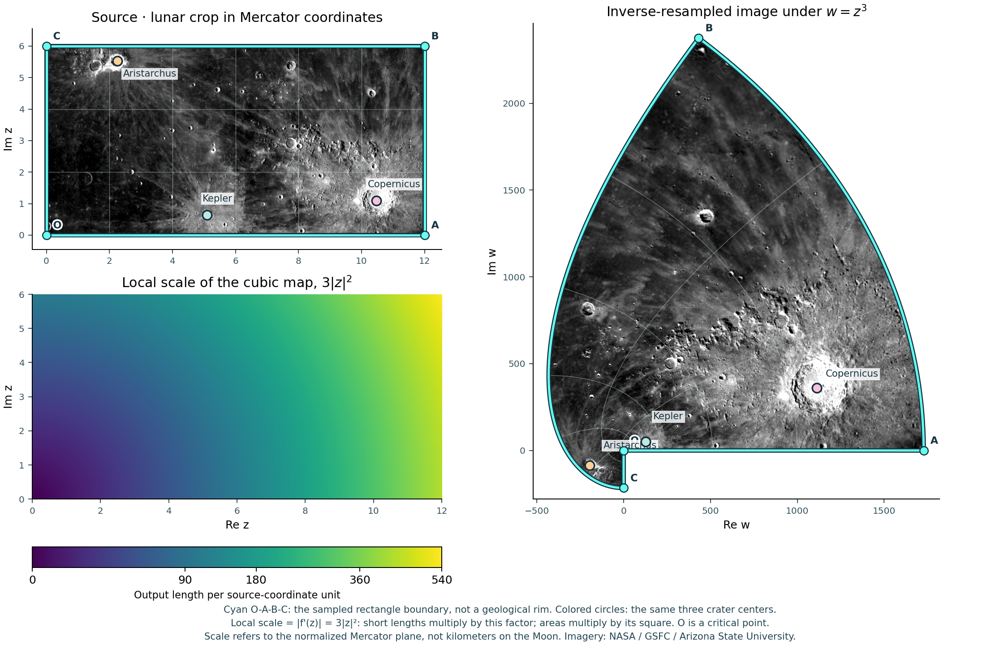
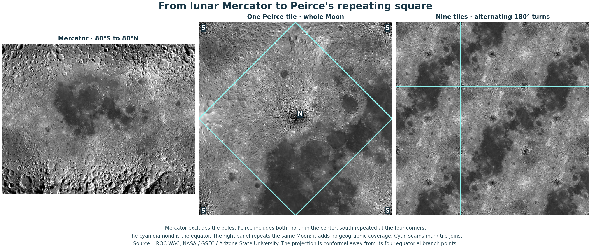

Move corresponding points, compare shapes and follow a lunar tracing from the sphere to a planar map. Interactive pages run offline. Keep the lunar data and image files beside their HTML page.
Unified Peirce atlas · keep P while changing views
Switch between hemisphere structure, lunar imagery, local scale and joined tiles. Follow the same geographic point, show or hide the graticule and compare the poles and cuts.
Explore the thesis tracing · sphere → Mercator → chosen map
Track the same A–D vertices and moving point P through all three views. Choose z², z³, the new Log(1 + z), or Peirce. Cyan contours have a dark halo so they remain visible over lunar imagery. The archival geographic registration is approximate.

Local lunar crop · z³
Cyan marks the sampled rectangle; colored circles identify the same crater centers. The heatmap shows |f′(z)| = 3|z|² in normalized source units, not ground distances.

Northern hemisphere → square
The same three craters and graticule in stereographic and SC coordinates. The full composition is printed below the figure.

Global graticule · structure
The central diamond contains the north; four corner triangles contain the south. Use this diagram to interpret the mosaic.

Global mosaic · poles and scale
One entire Moon with north at the center and four copies of the south pole at the corners. Colors on the scale panel show local length enlargement relative to a pole.

Mercator → Peirce → repeating tiles
See the geographic image become a square and join rotated copies. Nine tiles repeat the same surface; they add no coverage. Mercator omits the poles.